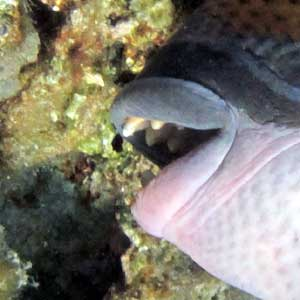

Titan triggerfish
( Balistoides viridescens )
The triggerfish doesn't attack divers without a reason. The reason is the spawning season.
Usually the fish bites corals seeking urchins and crabs in holes. This time many small fish (like butterflies and picasso ) surround the giant triggerfish waiting for the left overs. Titan's teeth are strong. On photo you see real teeth not a parrot-fish's beak.



Good strong teeth